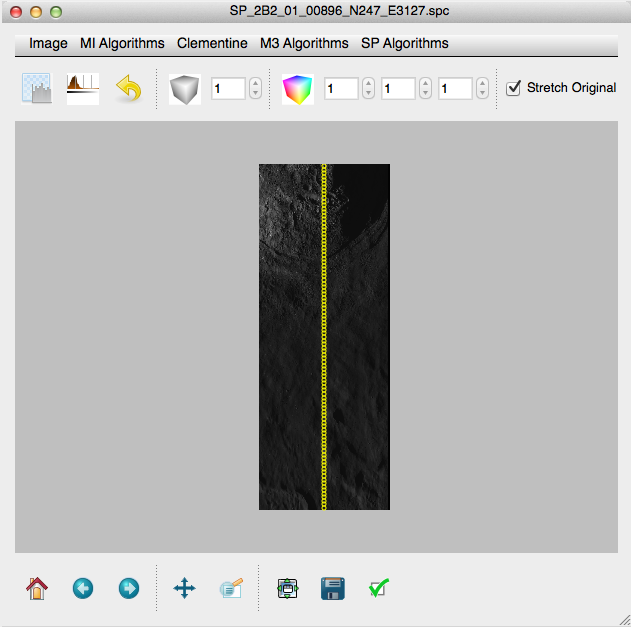

Spectral Profiler
Spectral profiler is a spot profiler that records down the center of an MI image. We parse the spectral profiler binary data and approximate the location of the spots within the frame.
Spot placement
SP spot placement is approximate (naive). We assume that spots are placed with equal spacing down the center of the reference image. We assume that the *P.jpg image is shipped to us with the correct orientation and that the imager images at an equal interval. Additionally, this method discount the curvature of the body. If you have an improved method for surface placement [file and issue](https://github.com/jlaura/pysat/issues/new)
Spectral profiler ships data with a .sl2 file suffix. This can be renamed to .zip and opened normally. Within the directory are three or four files:
- *.jpg - A thumbnail image. We ignore this image, if the *P.jpg is available.
- *P.jpg - The full resolution reference image. This image is often, but not always included.
- *.spc - The binary data.
- *.ctg - A pseudo-world file that described that data in plain text.
.spc
PySAT expects that you will keep the SP files together in the same directory
When opening an SP image, PySAT expects to be aimed at the .spc. If you point at the jpg the default loader will load the reference image, but the spot spectrometer data will not be available.

PySAT parses the image header, extracts all observations, cleans the data, and performs photometric correction. The data is then ready for processing.
